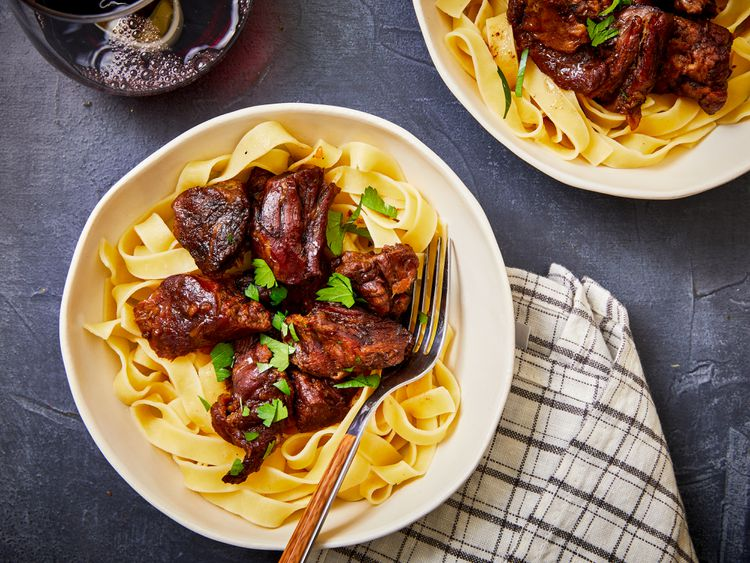

Odin Recipes
Home
Slow Cooker Ham

Description
This irresistibly rich butter-based beef recipe uses just three ingredients to create a luscious
slow cooker meal. Stew meat, onion soup mix, and butter combine for an intensely savory bite you'll
want to experience over and over again. Add this popular beef recipe to your rotation for a
delightfully meaty dinner any day of the week.
Ingredients
-
3 pounds cubed beef stew meat
- 1/2 cup of butter
- 1 ounce of enevelope dry onion soup mix
Steps
-
Gather all ingredients.
-
Place beef and butter in a slow cooker and sprinkle onion soup mix over top.
-
Cover, and cook until meat is tender, on Low for 8 hours, or on High for 4 to 5 hours. Stir
once or twice during cook time.
-
Serve hot and enjoy!